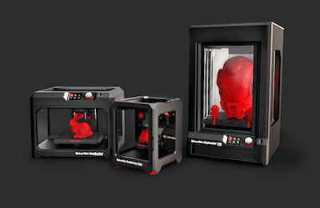
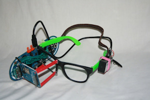

A Surefire Way to Save RadioShack
Originally published at https://singularityhacker.com/a-surefire-way-to-save-radioshack

The news is bleak. RadioShack is pretty much doomed and will soon be filing for bankruptcy. While this isn’t a surprise (the company has been dying slowly over the last couple of years), I think they can be saved by a pivot. That pivot entails serving and catering to the maker community.
Dump the phones and set up a couple 3d printers for on-demand printing. Turn the space into a consumer maker space. Customers would be able to come in and watch as their request is printed right in front of them and/or the option to pay for a monthly membership that includes discounted rates and maker classes.
Why this would work:
\1. Opportunity. Its an untapped market. Nobody is doing this. Where can you find hardware components, servo motors, and electrical blueprints besides online? Nowhere but RadioShack. Leverage your strengths and the brand recognition you already have!
\2. Demand. Geeks are tripping over each other to have something like this. The maker scene is so hot that people band together to pool their money and rent space and equipment to launch their own maker spaces. The market is begging for a commercial maker spot.
\3. Position. It’s in line with RadioShacks historic origins: I remember Steve Wozniak talking excitedly about getting hardware components and schematics as a kid from RadioShack. Embrace your identity! Your future is in the back of the store where the Arduino boards and soldering irons are, not in the front with the feature phones.
\4. Price. The price of 3d printers is plummeting. This means RadioShack could buy higher end models for cheap and sell the basic models at high margin.

Picture the new RadioShack commercials…
A guy wearing expensive sunglasses leans over to another guy wearing really cool original shades and says “Dude, where did you get those amazing shades?” Second guy replies “Thanks, I made them. Where’d you get yours?” First guy, crest fallen, replies “Oh, at the outlet for $200.” He then notices that several other guys are wearing his exact same shades in the background. #radioshack
A kid walks past a billboard advertising Google Glass and stops to ponder inquisitively. He goes home and searches relentlessly online, furiously taking notes [beautiful mind music starts]. Now you see him walking into RadioShack, grabbing things off the shelf, a friendly RadioShack employee assists him while his creation is being printed at 3d printer station. He’s now walking out the store wearing and talking to his homemade Google Glass. He passes an elderly woman on the sidewalk who looks and points at him, whispering to her husband in utter befuddlement. #radioshack

Mark my words RadioShack. Do this and you will not only be saved, but you will thrive. You will be reborn. Reinvented. What do you have to lose?